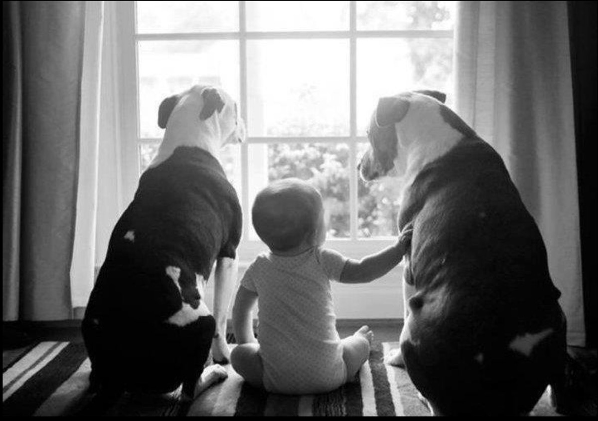

Între prieteni
Ascultă măi ciobănel
Suntem prieteni amândoi
Ne deosebim nițel
Tu trăiești pe lângă oi
Eu cum vezi am și o zgardă
Și sunt legat de stăpân
Sunt liber doar prin ogradă
Până când ajung bătrân
Pe când tu cu zer cu urdă
Latri doar a veselie
Lupii ca să te audă
Și la oi ca să nu vie
Ciobanu-n caval îți cântă
Măgarul ora exactă
Grijuliu nu te frământă
Așa trăiești viața toată
Prea bine prietenul meu
Parcă-mi pare rău de tine
Dar cât tu, atât și eu
Avem o viață de câine!
Vasile Groza